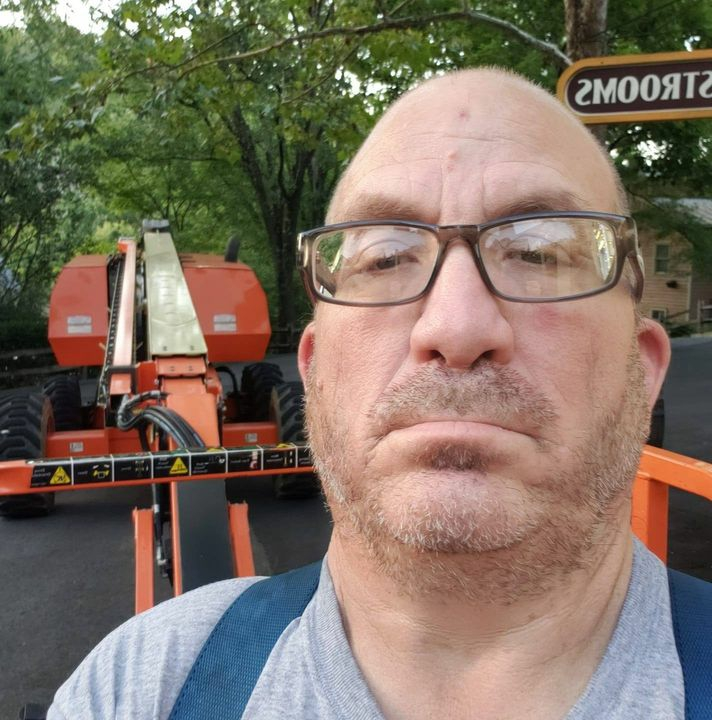
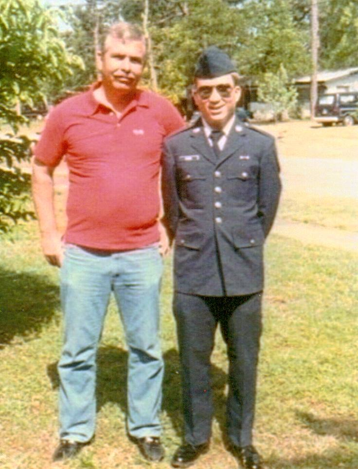

Welcome to the Steve Culmer Website
This website is designed for the future Culmer generation to learn about him.
And be proud of their heritage.
His family had served in the Armed Forces, so he decided to keep to tradition and he joined the United States Air Force.
While he was in the Air Force he earned 10 ribbons and medals:
He has gotten into Genealogy, so that he can find out where he came from, so far he has researched his family all the way back to the late 1600s and early 1700s. And he found out he is related to man who founded the City of Knoxville, Tennessee by marriage, and several Tennessee Senators and United States Senators.
His accomplishments are that he got his Associates Degree in Computer Science and he is now working toward his Bachelors Degree in Web Development.
 